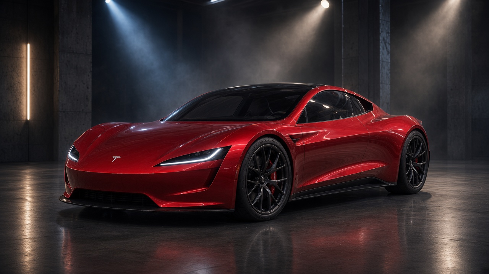
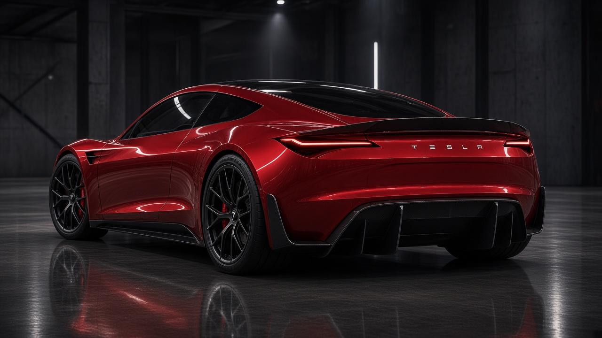
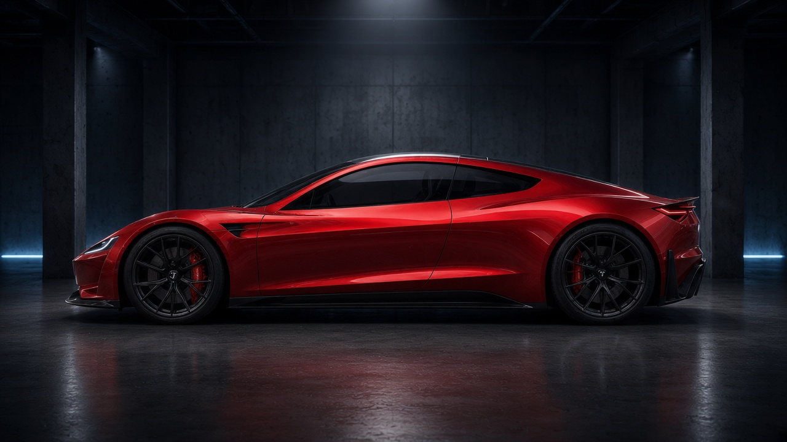
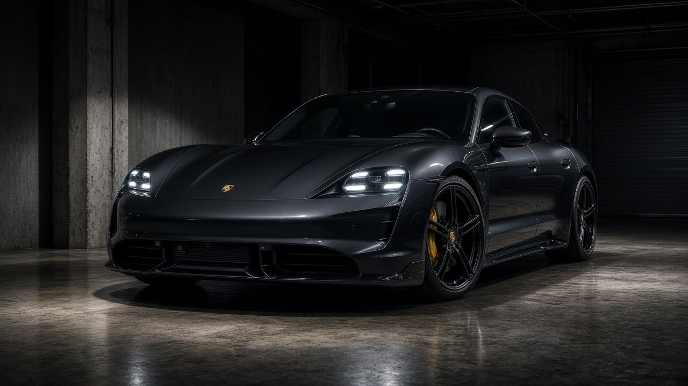
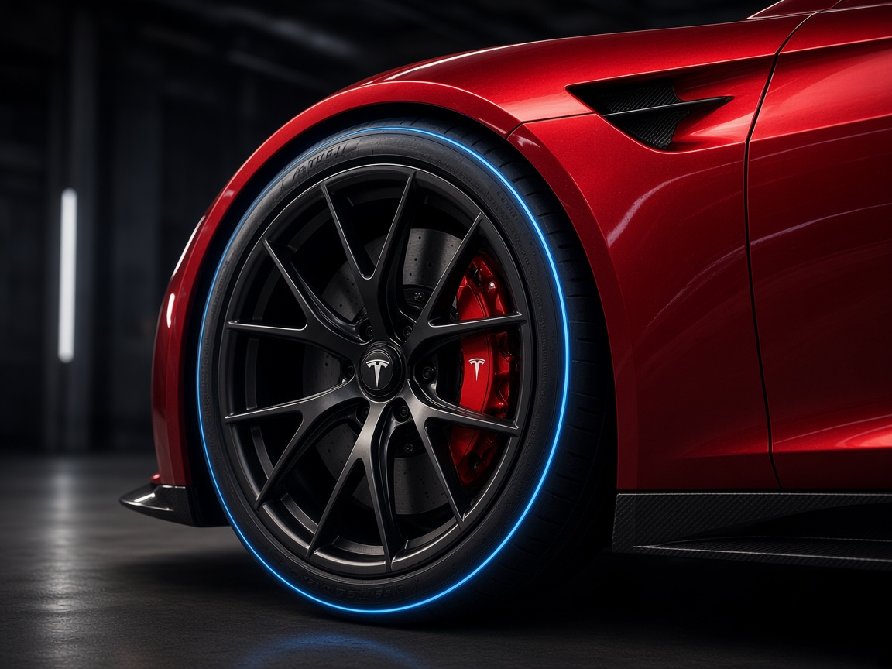

Tesla’s second-generation Roadster is scheduled for a dedicated reveal on October 1, 2026—nine years after Tesla began accepting deposits for a car it has still not put into production. A Tesla teaser on X carried the words “Go for launch,” while reservation holders have reportedly received invitations connected to the Waco, Texas area, near SpaceX’s McGregor test facility.
That location matters: the long-discussed SpaceX package and its cold-gas thruster concept may be central to what Tesla is about to show. But this is not merely another Tesla unveiling. It is the moment the industry will finally measure nine years of promises, delays, and customer money against an actual production-ready machine.

$50,000 for a Place in Line
When Tesla unveiled the new Roadster in 2017, the reservation process was anything but symbolic. A standard customer was expected to pay $5,000 at the time of reservation and another $45,000 by wire transfer within ten days: a total of $50,000 for a place in line for a car that remains undelivered.
The Founders Series was even more extreme. Tesla offered 1,000 Founders Series Roadsters, each requiring the full $250,000 purchase price upfront.
That gives us the most important answer to the question many people still ask: how many customers paid the full price for a Roadster nine years ago? Up to 1,000 buyers could have paid in full. If all Founders Series allocations were taken—as the widely cited approximately $250 million figure suggests—Tesla could have collected roughly $250 million from that edition alone.
Tesla has never publicly disclosed the exact number of standard Roadster reservations. It would therefore be misleading to claim a precise total number of depositors or total cash collected across all reservations. There is, however, a clear baseline:
| Scenario | Calculation | Potential cash collected |
|---|---|---|
| Founders Series ceiling | 1,000 × $250,000 | $250 million |
| Illustration: 5,000 standard reservations | 5,000 × $50,000 | $250 million additional |
| Illustration: 10,000 standard reservations | 10,000 × $50,000 | $500 million additional |
The standard-reservation scenarios above are illustrations, not Tesla-confirmed figures. Deposits were described as refundable before a purchase agreement was signed, so deposits are not automatically revenue or profit. They do, however, show the extraordinary scale of customer trust Tesla was able to command.
The New Speculation: Thrusters or a Fan Car?
The October 1 teaser has ignited two separate—but potentially compatible—Roadster theories. Neither is confirmation that the hardware will be installed on a customer car. Both are worth watching because they point to radically different ways of solving the same problem: putting more force through the tyres during acceleration, braking, and cornering.
Theory One: the SpaceX Cold-Gas Package
The familiar theory is the SpaceX option package. Elon Musk first discussed a Roadster package using around ten cold-gas thrusters in 2018. The concept uses a compressed-air tank, replenished by an electric pump, feeding nozzles that produce short bursts of cold-gas thrust. Musk suggested the system could improve acceleration, braking, cornering and top speed; earlier descriptions said the composite overwrapped pressure vessel could occupy the area otherwise used by the rear seats. The claimed tank pressure was around 10,000 psi / 690 bar.
The important editorial distinction is simple: cold-gas thrusters would provide thrust directly. In theory, a rearward-facing nozzle could add forward force at launch; a forward-facing nozzle could assist deceleration; side-oriented jets could potentially influence vehicle attitude. The actual benefit, energy use, safety strategy, packaging, legal approval and street-car calibration have not been officially disclosed by Tesla.
The teaser’s four upward plumes are not proof of four thrusters. They could be cinematic lighting, an exhaust-like visual device, or a clue to a completely different technology. Treat the connection as speculation until Tesla identifies the system on October 1.

Theory Two: Tesla’s Active Fan-Downforce Patent
There is a more concrete document behind the second theory. Tesla was granted U.S. Patent US 12,377,920 B1, titled Adaptive Vehicle Aerodynamics for Downforce, on August 5, 2025. The patent describes a vehicle system with one or more fans in airflow pathways, plus deployable skirts that can create a bounded low-pressure region beneath the car. In its most aggressive low-speed mode, the skirts can seal the underside against the road surface while fans extract air, effectively pulling the vehicle toward the ground.
This is the fan-car idea: rather than waiting for high speed to generate aero load, electrically driven fans could create downforce at very low speed or even from a standstill. That could matter enormously for traction off the line—the very instant at which passive wings and diffusers have almost no aerodynamic effect.
The patent outlines multiple operating modes:
- A maximum-downforce, low-speed mode using a sealed or near-sealed underfloor region and fan-generated low pressure.
- A dynamic mode designed for higher speeds or rougher surfaces, with a different skirt configuration and potentially more fans operating.
- Electronic control that adjusts fan operation and skirt deployment to driving conditions.
The Roadster teaser’s four vertical light plumes have been compared with a four-fan arrangement shown in the patent imagery. That visual match is intriguing, but it remains an interpretation—not a Tesla confirmation that the patent belongs to the Roadster, that it uses four fans, or that it will enter production.
Why the Difference Matters
A cold-gas system and a fan-downforce system do not do the same job.
| Technology | What it could do | Primary advantage | What remains unconfirmed |
|---|---|---|---|
| SpaceX cold-gas thrusters | Add short bursts of direct thrust or force | Potential assistance with acceleration, braking, cornering, and attitude control | Hardware layout, tank size, repeatability, legal approval, customer availability |
| Fan-generated downforce | Create low pressure under the car using fans and deployable skirts | Immediate tyre loading and traction even at low speed | Roadster application, exact number of fans, noise, sealing strategy, production readiness |
| Conventional active aero | Adjust wings, diffusers, ducts, and body surfaces | Efficiency at speed, drag/downforce balance | Whether it is part of the final Roadster package |
A fan system would not magically propel the Roadster forward. Its value would be tyre grip: more vertical load can increase the traction available before the tyres spin. Cold-gas thrusters, by contrast, could theoretically add force independently of tyre grip for a short duration. Combining both concepts would be wildly ambitious—and exactly why the October 1 presentation needs technical detail, not just visuals.
The Promise Still Needs Specs
Tesla’s original 2017 Roadster presentation set targets that sounded closer to a superhero prop sheet than a conventional production-car briefing:
- 0–60 mph: 1.9 seconds
- Top speed: over 250 mph / over 402 km/h
- Range: 620 miles / approximately 998 km
- Starting price: $200,000
- Founders Series price: $250,000
Later, Elon Musk escalated the claim further, suggesting a sub-one-second acceleration time with an optional SpaceX cold-gas thruster package. That claim should be treated carefully. It is not a homologated production-car figure, and Tesla has not yet published a final technical specification sheet covering battery capacity, charging capability, final motor configuration, mass, braking hardware, or verified range certification.
Tesla’s 2025 fan-downforce patent makes the teaser speculation more interesting, but a patent is not a product announcement. Automotive companies often patent concepts years before deciding whether to develop, homologate, or sell them. The patent only establishes that Tesla has protected an adaptive fan-and-skirt downforce concept; it does not establish final Roadster hardware.
Batman Garage angle: do not sell a promise as a specification. As of today, the Roadster is not a directly comparable production vehicle. It is a nine-year-old promise about to receive a new public form.

Why October 1 Matters
On October 1, six answers will matter more than any cinematic acceleration run:
- Is Tesla showing a finalized production design or another demonstration prototype?
- Will the company disclose final battery, charging, weight, braking, and thermal-management data?
- Is the SpaceX thruster package a real customer option, a special demonstrator, or simply a technology tease?
- Is Tesla’s adaptive fan-downforce system related to the Roadster, and if so, how does it work at road-car speeds and on uneven surfaces?
- Can either system repeat its claimed effect, rather than deliver a one-off launch demonstration?
- Will Tesla provide a credible start-of-production and delivery timeline?
Tesla has previously pointed to production in 2027 or 2028 at Gigafactory Texas, but that remains an intention rather than a firm customer-delivery schedule.
Tesla Roadster: What We Know
| Item | Current information | Status |
|---|---|---|
| Vehicle | Second-generation Tesla Roadster | Confirmed project |
| October 1, 2026 | Dedicated reveal/unveiling expected | Confirmed event date, not production start |
| Drive system | Electric AWD concept; final motor layout remains unconfirmed | Not finalized publicly |
| 0–60 mph | 1.9 sec original target; later “under 1 sec” talk with thrusters | Target/claim, not homologated |
| Range | 620 miles / approx. 998 km | Original 2017 target |
| Top speed | Over 250 mph / over 402 km/h | Original 2017 target |
| Active fan downforce | Tesla owns a 2025 patent for fan-and-deployable-skirt downforce technology | Patent confirmed; Roadster use unconfirmed |
| SpaceX cold-gas thrusters | Proposed package has been discussed by Musk | Concept discussed; customer implementation unconfirmed |
| Standard price | $200,000 | Historically communicated |
| Founders Series | $250,000 upfront; 1,000-car limit | Historically communicated |
| Standard reservation | $50,000 total deposit | Historical reservation terms |
| Manufacturing | Previously indicated for 2027 or 2028, Gigafactory Texas | Intention, not firm schedule |
Reality Check: Porsche Taycan Turbo GT
The Porsche Taycan Turbo GT represents the clearest electric reality check for the Roadster’s promises. It is not a two-seat hypercar; it is a four-door electric sports sedan. Yet it is already a production vehicle with declared battery, charging, braking, weight, power, and acceleration data—and performance figures that would have sounded impossible for a road-going EV only a few years ago.
The Taycan Turbo GT uses an 800-volt electrical architecture, a 97 kWh usable battery, DC charging at up to 320 kW, and a claimed 10–80 percent DC charging time of 18 minutes under optimum conditions. Porsche quotes up to 760 kW / 1,034 PS with Launch Control.

| Parameter | Tesla Roadster | Porsche Taycan Turbo GT |
|---|---|---|
| Market status | Reveal expected October 1, 2026; production not confirmed | Production vehicle currently on sale |
| 0–100 km/h | Approx. 2.0 sec equivalent of the original 1.9-sec 0–60 mph claim; later sub-one-second statement tied to thrusters | 2.3 sec with Launch Control; 2.2 sec with Weissach Package |
| Top speed | Over 402 km/h claimed | 290 km/h; 305 km/h with Weissach Package |
| Peak output | Final figure not published | Up to 760 kW / 1,034 PS with Launch Control |
| Torque | Final figure not published | 1,240 Nm with Launch Control |
| Range | 620 miles / approx. 998 km claimed; test cycle unspecified | 528–554 km WLTP (German technical sheet); 540–559 km on current model page |
| Battery | Capacity, voltage, and chemistry not finalized publicly | 800 V; 105 kWh gross / 97 kWh net |
| DC charging | Not disclosed | Up to 320 kW; 10–80% in 18 minutes under optimum conditions |
| Downforce solution | Potential fan-and-skirt system is speculative for Roadster | Conventional production-car aero and chassis system |
| Powertrain | Two-seat hypercar concept; final production layout unknown | AWD; one-speed front and two-speed rear transmission |
| Weight | Not disclosed | 2,290 kg DIN |
| Price | Historically $200,000; $250,000 Founders Series | Market-dependent; U.S. page lists from $243,700 |
Porsche’s numbers carry the advantage of being attached to a finished vehicle. The Taycan Turbo GT records 0–200 km/h in 6.6 seconds and uses 420 mm front and 410 mm rear Porsche Ceramic Composite Brakes, together with Porsche Active Ride suspension.
Tesla’s targets could eclipse Porsche’s headline numbers in maximum speed and declared range. But numbers become meaningful only when they come with weight, repeatability, braking performance, thermal durability, a verified charging curve, a certified range cycle, and delivery dates.

What Batman Garage Will Watch
If Tesla unveils a Roadster with rocket-like acceleration on October 1, the internet will explode—and it should. The original Roadster promise remains one of the most audacious in modern automotive history. But Batman Garage will be watching for the data behind the spectacle:
- Curb weight and aerodynamic configuration
- Battery capacity, architecture, and usable energy
- Charging peak and charging curve
- Motor power without any thruster assistance
- Whether a fan-and-skirt system is fitted, how much downforce it creates, and how it behaves on real roads
- Brake hardware and track durability
- Certified range methodology
- First customer delivery date
Only then will it be fair to decide whether Tesla has created a new electric escape machine worthy of Bruce Wayne’s garage—or simply the most expensive teaser campaign of the decade.
Editor’s Note
Tesla is no longer entering an empty arena. During the Roadster’s wait, Porsche turned the Taycan Turbo GT into a production reality with 800-volt charging, track-focused hardware, and up to 1,034 PS. Tesla does not need to copy the Taycan. But it does need to show that its boldest promise is more than a dramatic video, a patent drawing, and a remarkable acceleration claim.
Cars Collector Note
The Founders Series is not an ordinary reservation story. It is potentially 1,000 people willing to send a quarter of a million dollars roughly nine years before their car entered production. If the Roadster arrives as a limited, radical, technically convincing hypercar, those early examples will carry an immediate collector narrative. If it does not, they will remain a reminder that patience can be the most expensive commodity in the car world.
Q&A
When will the Tesla Roadster be revealed?
Tesla has scheduled a Roadster reveal for October 1, 2026. That is an unveiling event, not a confirmed start of customer deliveries.
Has the second-generation Roadster really been delayed for nine years?
Yes. Tesla began taking Roadster reservations in 2017, and the currently announced reveal is in 2026.
How much was the Tesla Roadster deposit?
The standard reservation required $50,000 in total: $5,000 at reservation and $45,000 by wire transfer. The Founders Series required the full $250,000 upfront.
How many people paid the full price nine years ago?
The Founders Series was limited to 1,000 cars. If fully allocated, up to 1,000 buyers paid $250,000 each, for roughly $250 million. Tesla has not publicly disclosed the total number of standard reservations or total deposits.
Will the Tesla Roadster have SpaceX thrusters?
Tesla has not confirmed a production specification. Musk has discussed a proposed SpaceX package using cold-gas thrusters, but no final customer-car hardware, availability, price, or approval status has been published.
What is Tesla’s fan-downforce patent?
Tesla’s U.S. Patent US 12,377,920 B1 describes fans and deployable skirts that create low pressure beneath a vehicle, potentially producing downforce even at low speeds. The patent is real; its use on the Roadster is not confirmed.
Why could a fan system matter for acceleration?
Passive aerodynamics need speed to generate substantial downforce. A fan system could theoretically load the tyres at launch by reducing pressure beneath the car, increasing available traction. It does not itself create forward thrust.
Are Tesla Roadster performance figures confirmed?
Not for the final production car. The original targets included 620 miles of range, more than 250 mph, and a 1.9-second 0–60 mph time. Later thruster-related claims are not homologated production specifications.
What does the Porsche Taycan Turbo GT offer today?
Up to 760 kW / 1,034 PS with Launch Control, 0–100 km/h in 2.3 seconds, a 290 km/h top speed, a 97 kWh usable battery, and 10–80 percent DC charging in 18 minutes under optimum conditions.